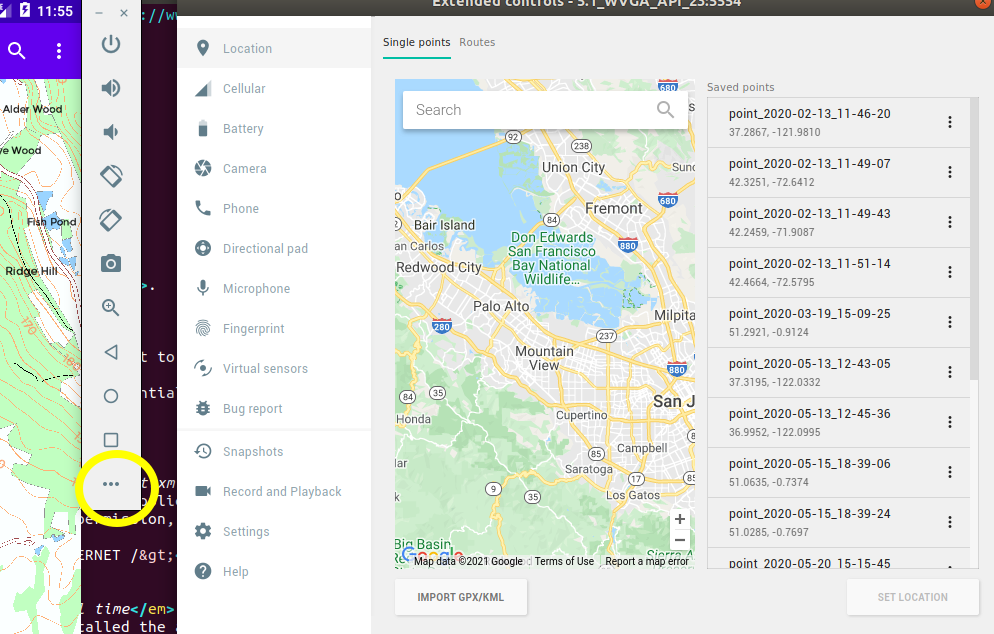

Last week you were very briefly introduced to permissions. Apps need to be granted permissions to perform sensitive operations. Sensitive operations can include:
<application> tag. For example, to specify that we need internet permission, we
would add the line:
<uses-permission android:name="android.permission.INTERNET" />
Before Android 6, permissions were specified at install time, so a user was informed what permissions an app needed when they installed the app. However, this model had some disadvantages. It is not very flexible; a user might want to use some sensitive permissions but turn others for example, it might be that a user wishes to use all features of a mapping app except location tracking
Android 6 (API level 23) uses a runtime permissions model, in which permissions can be turned on and off at run time, rather than install time. With Android 6 permissions, you can grant an app certain permissions but not others, at run time. You can also turn permissions on and off at any time via the device's Settings.
To enforce the use of Android 6 permissions, the targetSdkVersion of your app must be at least 23; we looked at targetSdkVersion last week.
Certain permissions in Android are more sensitive than others, these are called dangerous permissions. Dangerous permissions include location, using the GPS (for privacy reasons), camera (even more so) and file I/O (because of the risk of a rogue app reading private data on your device). It is these dangerous permissions which require runtime permission checking, and these permissions which can be turned on or off in the Settings.
Less sensitive permissions, such as internet, can be done purely via the manifest, as before; these do not need runtime permission checking.
See this documentation on the Android site
As well as granting the permission at runtime, a user can grant permission by going into the phone's Settings, selecting "Apps" and then the appropriate app, and then turning the appropriate setting on. A user can also revoke the permission through the Settings.
You use the checkSelfPermission() call for this, though it is recommended to use ContextCompat.checkSelfPermission() from the Jetpack AppCompat library, to allow your code to run on older devices.
Here is an example of checking for the READ_EXTERNAL_STORAGE (read files on the device) permission. You can imagine that this is in onCreate() for now, but later, when we consider the activity lifecycle, you will see somewhere better to put it.
// imagine this code is in your onCreate() for now
if(ContextCompat.checkSelfPermission(this, Manifest.permission.READ_EXTERNAL_STORAGE) == PackageManager.PERMISSION_GRANTED)
{
// read from file...
} else {
// request the 'READ_EXTERNAL_STORAGE' permission
}
Note how checkSelfPermission() takes the permission we are interested in (READ_EXTERNAL_STORAGE) as an argument.
This method will return one of these constants:
PackageManager.PERMISSION_GRANTED if the permission has already been granted by the user;PackageManager.PERMISSION_DENIED if not.If checkSelfPermission() returns PackageManager.PERMISSION_DENIED, then you should request that permission from the user in your code.
Use ActivityCompat.requestPermissions() to request a particular permission. Again, this uses the Jetpack AppCompat library, to provide support to older devices. Here is an example:
ActivityCompat.requestPermissions(this, arrayOf<String>(Manifest.permission.READ_EXTERNAL_STORAGE ), 0)
Note how we put the requested permissions (there can be more than one) in a String array. Note also the code of 0 passed as the third argument. The onRequestPermissionsResult() callback uses the code to determine which permission request it is processing. In onRequestPermissionsResult(), you would perform the requested sensitive operation (e.g. listen for GPS position) if the appropriate permission was granted.
It is important to note that this will not immediately grant the permission. It requests permission from the user. It will bring up a dialog warning the user which permissions the app wants, and give the user the option to either grant or deny the request. When the user has done this, a callback function (onRequestPermissionsResult()) will be run, to be discussed next.
As discussed above, the onRequestPermissionsResult() callback runs when the permissions have been granted (or denied) by the user. An example of this method is shown below; it would be added to your Activity:
// add as a method of your Activity
override fun onRequestPermissionsResult(requestCode:Int, permissions:Array<String>, grantResults: IntArray) {
when(requestCode) {
0 -> {
if(grantResults.isNotEmpty() && grantResults[0] == PackageManager.PERMISSION_GRANTED) {
// now open the file
} else {
// user has denied file read permission so inform them that the app will not be able to read files
}
}
}
}
Note the three parameters to the method:
A good approach is to put the code which checks for, and uses, a dangerous permission in its own method. That way, once the permission has been granted, we can call this method again, and this time, the dangerous operation will run as the permission is now granted
For example, in the code below, readFromFile() tries to read from file, but checks that the permission has been granted first, and if it hasn't, it requests it:
fun readFromFile() {
// is the permission granted yet?
if (ContextCompat.checkSelfPermission(this, Manifest.permission.READ_EXTERNAL_STORAGE) == PackageManager.PERMISSION_GRANTED) {
// ... actual code to open and read from a file
} else {
// request the permission
ActivityCompat.requestPermissions(this, arrayOf(Manifest.permission.READ_EXTERNAL_STORAGE), 0)
}
}
In a simple activity, this could be called in onCreate(), though it could potentially be placed anywhere in our app where we need to perform the operation:
override fun onCreate(savedInstanceState: Bundle?) {
super.onCreate(savedInstanceState)
// do other setup stuff ...
readFromFile()
}
The corresponding onRequestPermissionsResult() runs when the permission has been granted (or denied) by the user. If it was granted, we call readFromFile() again:
override fun onRequestPermissionsResult(requestCode:Int, permissions:Array<String>, grantResults: IntArray) {
when(requestCode) {
0 -> {
if(grantResults.isNotEmpty() && grantResults[0] == PackageManager.PERMISSION_GRANTED) {
readFromFile()
} else {
// user has denied file read permission so inform them that the app will not be able to read files via an AlertDialog
AlertDialog.Builder(this)
.setPositiveButton("OK", null) // add an OK button with an optional event handler
.setMessage("You will be unable to read from file.") // set the message
.show() // show the dialog
}
}
}
}
Note how we call readFromFile() again when the user has granted file read permission. This time, as the permission has been granted, the app will actually be able to read from the file.
As long as we manage runtime permissions via the Jetpack AppCompat library (as we did in the examples above), code using runtime permissions will compile and run on these old versions of Android, as long as our targetSdkVersion is at least 23. However, that the user will not actually be prompted to grant permissions on a pre-Android 6 device; it will fall back to install-time
permissions
Having covered runtime permission handling, we are now going to look at a key piece of functionality which uses it; obtaining your current location. Many of the most interesting mobile apps are location-based apps, in other words, the app is sensitive to the user's location on earth. We might, for instance, have an app which displays a map of your current location. Or an app which looks up the nearest pubs, bus stops or railway stations. Such apps send the user's location to a web server, which then delivers data near that location. Most smartphones contain a GPS chip which obtains the device's location by communicating with Global Positioning System (GPS) satellites: the same mechanism used in car satnav systems. So, since location is so important in mobile app development, we are going to look at it now.
There are important ethical issues when it comes to location. Potentially, a malicious app could gather your location and send it to a server with a user's personal details, which could allow the user to be tracked without their consent. For this reason, location tracking is treated as a dangerous permission and must be granted by the user at runtime.
Furthermore, it is recommended to create an explicit privacy policy on your app's website (which can be linked to from Google Play) which spells out to users why the app needs location information and what will be done with it.
There are two permissions for location: ACCESS_FINE_LOCATION for accurate (GPS) position, and ACCESS_COARSE_LOCATION (for less-accurate (wifi and cell-tower) position. As for any permission (dangerous and non-dangerous), you need to add the appropriate permission to the manifest:
<uses-permission android:name="android.permission.ACCESS_FINE_LOCATION" />
This incomplete example shows how to obtain your location. Note
that a fully-working example would also need to request the ACCESS_FINE_LOCATION permission at runtime, using the technique described above.
package com.example.nickw.location
import androidx.appcompat.app.AppCompatActivity
import android.os.Bundle
import android.location.LocationManager
import android.location.LocationListener
import android.location.Location
import android.content.Context
import android.widget.Toast
// Use commas to separate superclasses and interfaces (extends and implements)
class MainActivity : AppCompatActivity(), LocationListener
{
// Add runtime permission handling, as described above (for you to do!!!)
// this method should be called:
// - if ACCESS_FINE_LOCATION permission is already granted
// - as soon as a user has granted ACCESS_FINE_LOCATION permission
fun requestLocation() {
if(GPS permission granted) { // for you to complete!!!
// note the use of 'as' to perform type casting in Kotlin
// getSystemService() returns a superclass type of LocationManager,
// so we need to cast it to LocationManager.
val mgr=getSystemService(Context.LOCATION_SERVICE) as LocationManager
// Distance (third argument) is float.
// In Kotlin we must explicitly use "f" to specify it's a float
mgr.requestLocationUpdates(LocationManager.GPS_PROVIDER,0,0f,this)
}
}
override fun onLocationChanged(newLoc: Location?) {
// newLoc might be null, so use the Kotlin apply() method to only run
// the specified lambda if it's not null.
// Inside an apply() lambda, "this" refers to the subject of the
// apply() call (newLoc here)
newLoc?.apply {
// Inside the apply() lambda, "this" will refer to newLoc, so to
// refer to the activity object, we need "this@MainActivity"
Toast.makeText (this@MainActivity, "Location=${this.latitude},${this.longitude}", Toast.LENGTH_LONG).show()
}
}
override fun onProviderDisabled(provider: String) {
Toast.makeText (this@MainActivity, "Provider disabled", Toast.LENGTH_LONG).show()
}
override fun onProviderEnabled(provider: String) {
Toast.makeText (this@MainActivity, "Provider enabled", Toast.LENGTH_LONG).show()
}
// Deprecated at API level 29, but must still be included, otherwise your
// app will crash on lower-API devices as their API will try and call it
override fun onStatusChanged(provider: String, status: Int, extras: Bundle) {
}
}
This code sample shows how to use the Location API. It will listen to the device's GPS and update the main content view with the current latitude and longitude (position on earth). So how does it work? The key thing is that there are three main components involved in obtaining your location:
To go through the code above in more detail:
val mgr: LocationManager = getSystemService(Context.LOCATION_SERVICE)
mgr.requestLocationUpdates(LocationManager.GPS_PROVIDER, 0, 0f, this)Note the parameters:
public class MainActivity : AppCompatActivity(), LocationListener.
In a LocationListener, you must provide four methods to handle different location events:
TheonLocationChanged() method takes a single parameter - a Location object representing our current location. It has two properties, latitude and longitude, for getting the actual latitude and longitude. So, in this app, we simply display the current latitude and longitude with what is called a Toast. A Toast is a temporary message which appears as an overlay on the screen. To create and show a Toast we do:
Toast.makeText (this, message, length).show()this refers to the activity. length can either be Toast.LENGTH_SHORT or Toast.LENGTH_LONG.
If you do not have a real device, or are located indoors (as you will probably be during the class; indoor GPS signals are not reliable) it is possible to test it in a development environment (with a GPS provider) by sending "virtual" locations to the emulator.
This is quite straightforward. Click on the three dots (...) at the bottom of the controls of the virtual device (to the right of the screen). This will take you to a dialog showing a map, by default located in Silicon Valley, California. You can change location by moving the map or searching for locations and then clicking "SET LOCATION". This will send a virtual GPS signal to the device, containing the latitude and longitude entered.
This is shown below:

This topic is relatively easy compared to some of the recent topics but is a useful topic to know if you are developing any sort of geographically-aware app: the ability to add markers to a mapping application. Many geographically-aware apps show points of interest as markers on the map.
The example below shows how to add markers to a map:
package com.example.basicmapapp
import androidx.appcompat.app.AppCompatActivity
import android.os.Bundle
import android.preference.PreferenceManager
import org.osmdroid.config.Configuration
import org.osmdroid.util.GeoPoint
import org.osmdroid.views.MapView
import org.osmdroid.views.overlay.ItemizedIconOverlay
import org.osmdroid.views.overlay.OverlayItem
class MainActivity : AppCompatActivity() {
override fun onCreate(savedInstanceState: Bundle?) {
super.onCreate(savedInstanceState)
// This line sets the user agent, a requirement to download OSM maps
Configuration.getInstance().load(this, PreferenceManager.getDefaultSharedPreferences(this));
setContentView(R.layout.activity_main)
val map1 = findViewById<MapView>(R.id.map1)
map1.controller.setZoom(14.0)
map1.controller.setCenter(GeoPoint(51.05, -0.72))
val items = ItemizedIconOverlay(this, arrayListOf<OverlayItem>(), null)
val fernhurst = OverlayItem("Fernhurst", "Village in West Sussex", GeoPoint(51.05, -0.72))
val blackdown = OverlayItem("Blackdown", "highest point in West Sussex", GeoPoint(51.0581, -0.6897))
items.addItem(fernhurst)
items.addItem(blackdown)
map1.overlays.add(items)
}
}
Note what we are doing here. There are two key classes:
OverlayItem fernhurst = OverlayItem("Fernhurst", "Village in West Sussex", GeoPoint(51.05, -0.72))items.addItem(fernhurst)
mv.overlays.add(item)
So far we have used the built-in osmdroid marker. However we can use custom markers for our app. Here is how we do this with the fernhurst OverlayItem:
fernhurst.setMarker(ContextCompat.getDrawable(this, R.drawable.marker))
Note how the setMarker() method takes the parameter
ContextCompat.getDrawable(this, R.drawable.marker)This is an object of type Drawable representing the marker icon. We obtain a Drawable by supplying the resource ID R.drawable.marker as a parameter to getDrawable(). The resource ID R.drawable.marker points to an image marker.png in the drawable folder (the folder storing drawables, i.e. images and icons) within the res folder of the project.
Toasts appearing on top of each other, I would advise using a 5-second update interval for GPS, i.e.:
mgr.requestLocationUpdates(LocationManager.GPS_PROVIDER, 5000, 0f, this)
We probably want something to happen when we tap on a marker, for example display details of that marker. How do we do this? We have to create an OnItemGestureListener object to listen to tap events, i.e. the user tapping items on the overlay, or long press events, i.e. the user pressing on the item for a second or two:
package com.example.basicmapapp
import androidx.appcompat.app.AppCompatActivity
import android.os.Bundle
import android.preference.PreferenceManager
import android.widget.Toast
import org.osmdroid.config.Configuration
import org.osmdroid.util.GeoPoint
import org.osmdroid.views.MapView
import org.osmdroid.views.overlay.ItemizedIconOverlay
import org.osmdroid.views.overlay.OverlayItem
class MainActivity : AppCompatActivity() {
override fun onCreate(savedInstanceState: Bundle?) {
super.onCreate(savedInstanceState)
// This line sets the user agent, a requirement to download OSM maps
Configuration.getInstance().load(this, PreferenceManager.getDefaultSharedPreferences(this));
setContentView(R.layout.activity_main)
val map1 = findViewById(R.id.map1)
map1.controller.setZoom(14.0)
map1.controller.setCenter(GeoPoint(51.05, -0.72))
val markerGestureListener = object:ItemizedIconOverlay.OnItemGestureListener<OverlayItem>
{
override fun onItemLongPress(i: Int, item:OverlayItem ) : Boolean
{
Toast.makeText(this@MainActivity, item.snippet, Toast.LENGTH_SHORT).show()
return true
}
override fun onItemSingleTapUp(i: Int, item:OverlayItem): Boolean
{
Toast.makeText(this@MainActivity, item.snippet, Toast.LENGTH_SHORT).show()
return true
}
}
val items = ItemizedIconOverlay(this, arrayListOf<OverlayItem>(), markerGestureListener)
val fernhurst = OverlayItem("Fernhurst", "Village in West Sussex", GeoPoint(51.05, -0.72))
val blackdown = OverlayItem("Blackdown", "highest point in West Sussex", GeoPoint(51.0581, -0.6897))
items.addItem(fernhurst)
items.addItem(blackdown)
map1.overlays.add(items)
}
}
The new code is highlighted. Note how we create an object markerGestureListener which is an object which implements the interface ItemizedIconOverlay.OnItemGestureListener<OverlayItem>. Note that markerGestureListener is the single instance of an anonymous class: an object which extends an abstract class or implenents an interface without having to create a new class, which could be considered overkill as we are just creating a single instance.
This is a listener object - an event handler - which responds to user interaction with the items on the layer. You must provide the methods:
onItemSingleTapUp() - an event handler method containing code to run if the user taps any overlay item on the overlay, andonItemLongPress() - an event handler method containing code to run if the user long-presses any item on the overlay.These two methods each take two parameters, the index of the OverlayItem within the overlay, and the OverlayItem itself which was tapped.
In each method, we make a Toast using that overlay item:
Toast.makeText(this@MainActivity, item.snippet, Toast.LENGTH_SHORT).show()
snippet gives us the description of that overlay item (e.g. "Village in West Sussex" for Fernhurst).
We can also use title to get the title of the overlay item.
To link the listener to the overlay layer, you provide it as the third parameter (this was null in the first example) to the ItemizedIconOverlay:
items = ItemizedIconOverlay<OverlayItem>(this, arrayListOf<OverlayItem>(), markerGestureListener)